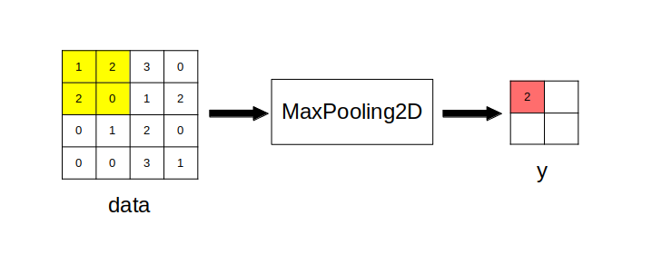
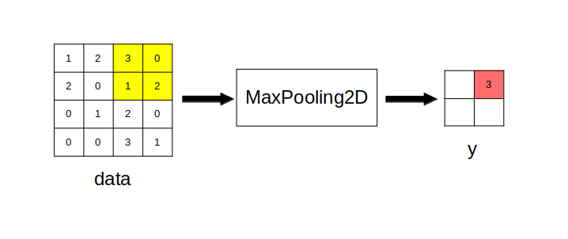

CNN は基本的には MLP と同じくフィードフォワード型のニューラルネットワークですのでモデルとしてSequential モデルを使います。
その後 add メソッドを使って各層を順々に積み重ねて作成します。
さて CNN では以下の層がよく使われています。
入力層の基本的な使い方はMLP の時と同じですが、CNN では多チャンネル画像を入力するので引数の指定の仕方が変わります。
(チャンネル・ラストの場合) tf.keras.Input(shape=(rows,cols,Cin,)) または (チャンネル・ファーストの場合) tf.keras.Input(shape=(Cin,rows,cols,)) rows: 入力画像の縦サイズ cols: 入力画像の横サイズ Cin: 入力画像のチャンネル数
引数 shape の値の並びは keras の設定によって変わります。
keras は「縦、横、チャンネル数」の順にデータが並んでいるチャンネル・ラスト・フォーマットの画像と「チャンネル数、縦、横」の順にデータが並んでいるチャンネル・ファースト・フォーマットの画像を両方扱うことができ、それらのモードは keras の設定によって切り替えることが出来ます。
現在の設定がどちらなのかは
print( tf.keras.backend.image_data_format() )
で確認することが出来ます。
channels_last と表示されたらチャンネル・ラスト、channels_first と表示されたらチャンネル・ファーストになります。
この設定を変更する方法については検索して調べて下さい。
前ページで説明した CNNのコアとなる層です。
tf.keras.layers.Conv2D( Cout, (kernel_size,kernel_size), activation='活性化関数' ) Cout : 出力画像のチャンネル数 kernel_size: カーネルのサイズ
引数 activation では活性化関数を指定します。
活性化関数としては 'tanh' (双曲線正接)や 'relu' (ReLU)などがよく使われています。
なお前ページの様にカーネルやバイアスの初期値を指定したい場合はそれぞれ
kernel_initializer=tf.keras.initializers.Constant(カーネルの初期値)
bias_initializer=tf.keras.initializers.Constant(バイアスの初期値)
という引数で指定します。
詳しくは前ページのソース1を参照して下さい。
入力画像を指定した大きさの窓で分割し、各窓の代表値を用いた縮小画像を出力する層です。
代表値の選び方として最大値を使う方法と平均値を使う方法があり、
(最大値) tf.keras.layers.MaxPooling2D( (pool_size, pool_size) ) (平均値) tf.keras.layers.AveragePooling2D( (pool_size, pool_size) ) pool_size: 窓のサイズ
というクラスがそれぞれの層に相当します。
窓のサイズ(pool_size)を指定することで入力画像が 1/pool_size 倍になって出力されます。
例えば2ページ目と同様に rows = cols = 4 として入力画像を以下の 4x4 行列 data で与えます。
\[ {\rm data} = \begin{bmatrix} 1, & 2, & 3, & 0 \\ 2, & 0, & 1, & 2 \\ 0, & 1, & 2, & 0 \\ 0, & 0, & 3, & 1 \\ \end{bmatrix} \]
pool_size = 2 とすると、出力画像は入力画像の 1/2 倍となるので、2x2 行列
\[ y = \begin{bmatrix} y_{00}, & y_{01} \\ y_{10}, & y_{11} \\ \end{bmatrix} \]
となります。
この時、$y$ の左上の画素値 $y_{00}$ は以下のようにして求まります。
data の黄色の部分の画素に対して MaxPooling2D 処理を行い、$y_{00}$ (赤い部分)の画素値を求めている
同様に $y$ の右上の画素値 $y_{01}$ は以下のようにして求まります。
data の黄色の部分の画素に対して MaxPooling2D 処理を行い、$y_{01}$ (赤い部分)の画素値を求めている
この処理を繰り返して最終的な $y$ は次のようになります。
\[ y = \begin{bmatrix} 2, & 3 \\ 1, & 3 \\ \end{bmatrix} \]
tf.keras.layers.Flatten()
は平坦化、つまり入力画像をチャンネルに関係なく全て1次元配列に変換して出力する層です。
全結合層 (Denseクラス)などに接続する前に使われます。
tf.keras.layers.Dropout( rate ) rate: ドロップ率(0〜1)
「過学習(過剰適合、オーバーフィッティングとも言います)」、つまり実際のデータに適合していないモデルになることを防ぐための層です。
学習の際に引数 rate で指定した確率に従ってランダムにデータを 0 にセットします。
tf.keras.layers.Dense(M, activation='活性化関数') M: ユニット(パーセプトロン)数
使い方はMLP の時と同じですので説明は省略します。